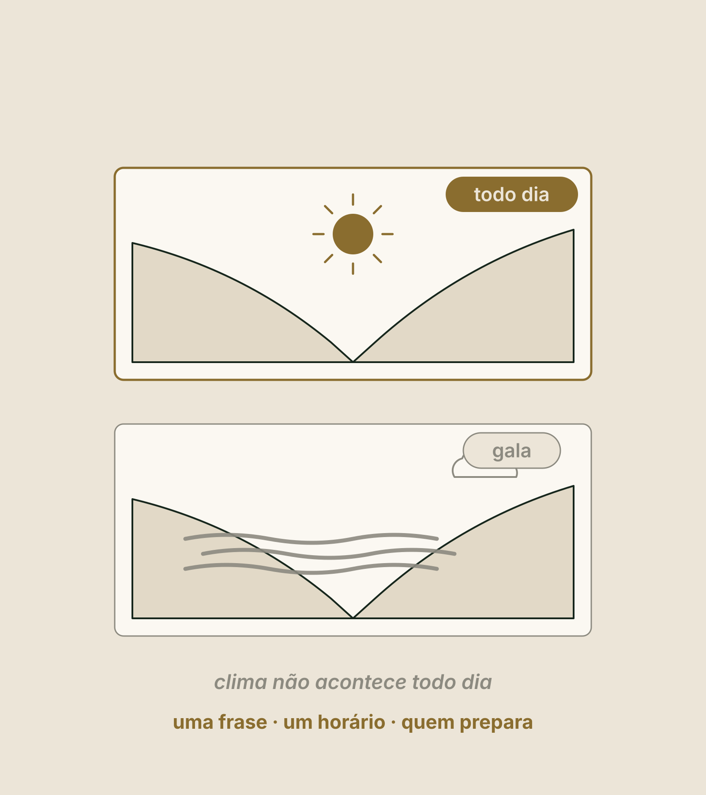
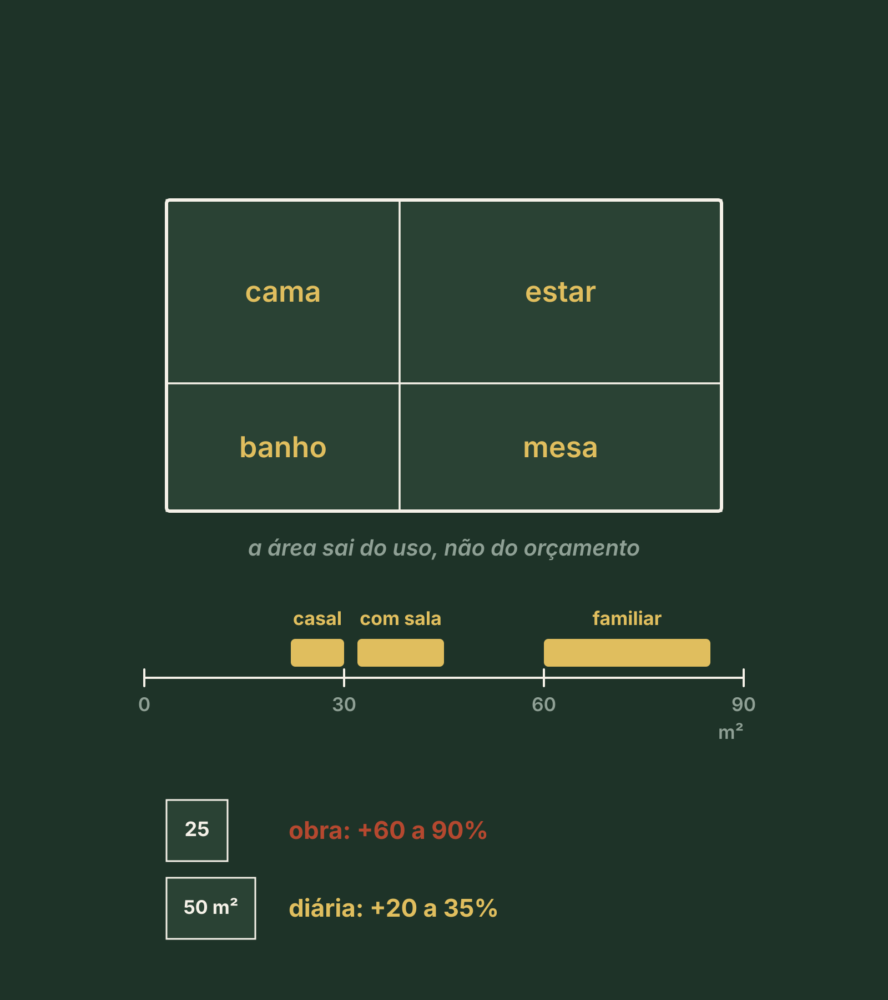

Para quem você vende, o que essa pessoa vive, a sua promessa e, só no fim, a unidade.
2
Por quê
Quem escolhe pelo catálogo vende a parte mais fácil de copiar. E quem desenha antes de decidir paga duas vezes.
3
Resultado
A página 3 do seu Dossiê: a Ficha do Produto.
Revisite · sem voltar às páginas
Três perguntas do Pilar 2
Uma cabana vendeu R$ 1.846 em 2,86 noites. Qual é a diária média?
Clique para virar
Resposta
R$ 645: o que entra dividido pelas noites vendidas, e não a média simples dos preços.
Quantas cabanas a Marina abre?
Clique para virar
Resposta
Três agora, com a infraestrutura desenhada para cinco. Esse número não muda neste pilar.
O mês fraco pede o quê?
Clique para virar
Resposta
Produto: um motivo para vir naquela época. Quase nunca desconto.
Bloco 1
O hóspede não paga pela cama
CuriosidadeUma cabana de 50 m² custa de 60% a 90% mais para construir que uma de 25 m². E cobra, tipicamente, só de 20% a 35% mais.
ReflexãoSe tirarmos a arquitetura, a decoração e os equipamentos, a sua ideia continua fazendo sentido?
DicaAbra a pasta de fotos salvas no celular. Hoje elas viram referência de estilo, não decisão.
A cena que se repete
Fotos salvas e a mesma dúvida: qual delas?
Uma cabana com vidro do chão ao teto. Um domo na mata. Um chalé com lareira.
A imagem parece uma decisão.
Não é. É uma estrutura procurando um motivo.
Antes da resposta · o que você acha?
Qual é o erro mais caro deste ponto do projeto?
A estrutura é a parte mais fácil de comprar e a mais fácil de copiar. Quando o produto não está escrito, a planta decide por você, e costuma decidir pelo que é mais barato de construir.
Os três erros de ordem
Clique em cada um: o que acontece?
Começar pela estrutura
Virar
Acontece
O produto sai do catálogo do fornecedor e vira a parte mais fácil de copiar.
Começar pela planta
Virar
Acontece
O arquiteto entrega um desenho bom para um programa que ninguém definiu.
Começar pela referência
Virar
Acontece
Copia-se um lugar admirado, sem o território que o sustentava e sem o público que pagava.
Ninguém começa errado por preguiça. Começa porque o caminho errado é mais divertido.
O que é produto
O hóspede não paga pela cama. Paga pela história que vai contar.
Produto é tudo o que a pessoa vive, das 72 horas antes da chegada às 72 horas depois da saída. A unidade é só uma parte.
Os quatro níveis do que se vende
Do mais fácil ao mais difícil de copiar
Clique em cada nível: o que é e por que ele compete.
Mesmo destino, mesma estrutura
Duas cabanas iguais por dentro
Cabana A
Cabana B
Ficou onde era mais fácil construir
Foi virada para o vale
Vista parcial, estrada ao fundo
A cama olha o nascente
Deck mínimo
Deck um pouco maior
Só a chave na porta
Café na porta ao amanhecer
A cabana B cobra mais, e quase nada do que a diferencia é obra.
A ordem importa, e é proposital
Quatro perguntas. A estrutura vem por último.
Clique em cada pergunta: o que ela responde e por que vem nessa ordem.
Antes do bloco 2 · 5 minutos
As sete perguntas antes do desenho
Que transformação eu quero proporcionar?
Quem vai viver essa experiência?
Que emoção eu quero despertar?
Que lembrança eu quero deixar?
Por que esse produto deve existir?
O que o torna impossível de comparar?
Como eu quero que ele seja lembrado daqui a vinte anos?
5:00
Não procure a resposta bonita. Procure a verdadeira. Onde não souber, escreva "não sei".
Bloco 2
Para quem paga mais, e o que ele vive
CuriosidadeNo topo da faixa, só uma das quatro coisas mais elogiadas é um item que se compra.
ReflexãoSe você só pudesse escrever o anúncio para um público, qual seria?
DicaTenha à mão as cem avaliações que você leu no Pilar 2. O seu público vem delas, não da sua vontade.
Exemplo ilustrativo · o que a Marina mediu no Pilar 2
O destino paga pela diferença?
Fim de semana a 30 minutosR$ 380 a R$ 1.150
Amplitude · 1.150 ÷ 3803,0
Meio dos 7 comparáveisR$ 580 · R$ 700
Acima de 3o destino paga pela diferença
O topo entrega
Tipo
Vista do vale
Lugar
Ninguém à vista
Lugar e desenho
Banheira na varanda
Item que se compra
"A casa só para nós", em 11 de 100
Privacidade
Escolha o público · clique em cada um
O que cada público pede do produto
Casal
O que pede
Pede
Privacidade, vista, lareira, silêncio. Paga bem por diferenciação.
Família
O que pede
Pede
Espaço, cozinha, área segura.
Grupo de amigos
O que pede
Pede
Área comum, capacidade, custo por pessoa.
Trabalho e estadia longa
O que pede
Pede
Internet, mesa, previsibilidade.
Marina, principal: o casal que vem descansar. 68 de 100 avaliações eram de casais.
De domingo a quinta: quem trabalha tranquilo. A semana dela enche a 26%.
Fica de fora quem quebra a promessa: eventos com som, grupos, criança pequena, quem fica uma noite.
O momento assinatura · falhou em um, sai da lista
O hóspede esquece o quarto. Não esquece o momento.
Só existe aqui
O teste
O teste
Se dá para copiar a vinte minutos dali, é atributo, não assinatura.
Acontece sem você
O teste
O teste
Se depende do humor de alguém naquele dia, não é produto, é sorte.
Cabe numa frase
O teste
O teste
Se o hóspede não consegue contar, você perde o canal.
Dá foto
O teste
O teste
A foto do hóspede traz o próximo.
Um só, e bem feito: quando tudo é especial, nada é lembrado.
Quiz relâmpago
Qual destes é um bom momento assinatura?
Wi-fi é item esperado, não momento. O pôr do sol que todos têm é atributo. O terceiro só existe ali, acontece sem ninguém, cabe numa frase e dá foto.
Exemplo ilustrativo
O vale às sete, da cama
Só existe aqui? Sim: a meia encosta e o nascente.
Sem presença? Sim, se a cesta térmica estiver na varanda antes das sete.
Numa frase: "Acordamos vendo o vale, tomando café na varanda."
Dá foto? Sim.
O ponto fraco: a neblina é clima. O momento de todo dia é o vale às sete. A neblina é a versão de gala.

Permanência é conteúdo
"O que eu faço lá no sábado inteiro?"
Marina, dentro sem custo: a trilha até a crista, o deck, a fogueira, o céu.
Dentro, com preço visível: massagem sob demanda; a tábua de queijos da família vizinha.
Fora, a até 30 minutos: a lista do Pilar 1. Onde não sabe, "não sei".
Exemplo ilustrativo · resolvido passo a passo
Mês fraco pede produto, não desconto
Quatro noites de domingo a quinta · 4 × R$ 580R$ 2.320
A estadia, com nome próprio · 2.320 × 0,80R$ 1.856
Por noite · 1.856 ÷ 4R$ 464, que nunca vão para a tabela
Para quem trabalha tranquilo: mesa voltada para o vale, cozinha compacta e internet por satélite. Nenhum desses itens é obra. É hipótese até o calendário mostrar procura.
Ao vivo · equalize a estadia da semana
Exemplo ilustrativo · hipótese, não promessa
Uma estadia com nome próprio
As noites pela diária de referência
A estadia
Por noite, só para conferir
Ajustado ao vivo
Antes do bloco 3 · 6 minutos
O seu quem e o seu momento
1O seu público principal, com o motivo da viagem, e o de domingo a quinta.
2Quem fica de fora, com o motivo de cada um.
3Cinco candidatos a momento assinatura. Passe pelos quatro requisitos e fique com um.
4O seu segundo dia, nas três camadas.
6:00
É a primeira linha da sua Ficha do Produto.
Bloco 3
A promessa, a unidade e o preço
CuriosidadeDepois de vinte anúncios de hospedagem na serra, tente lembrar de um. Muitos têm estrutura. Poucos têm promessa.
ReflexãoSe o vizinho trocar o nome dele pelo seu na sua frase, ela continua verdadeira?
DicaEscreva dez versões da frase em trinta minutos, sem editar. Depois corte.
De onde vem o "por que só aqui"
O DNA do destino
Exemplo ilustrativo · o DNA da Marina
Natureza: a mata e o vale.
Clima: o frio e a neblina da manhã.
Sabores: o queijo da família vizinha.
Emoção: o silêncio a dois.
Cultura, história e futuro: "não sei". Viraram tarefa.
Uma frase que um estranho consiga repetir
A frase em três partes
Parte
A exigência
De onde vem
O que se vive
Concreto, com verbo, sem adjetivo
O momento assinatura
Para quem
O público, com o motivo da viagem
O seu quem
Por que só aqui
Uma evidência do território
O DNA e o Pilar 1
A lista negra: único, incrível, exclusivo, inesquecível, encantador, premium.
Ao vivo · escreva a frase de um aluno
A tela confere as três partes e a lista negra
Exemplo ilustrativo · a Marina reescreve até passar
Três versões, e a promessa
Clique em cada versão: a frase e o porquê.
Dois testes que não custam nada
5
Olhe a foto por cinco segundos. Depois responda no chat: que experiência você imagina viver aqui?
O teste dos cinco segundos
Reprova quando cada pessoa imagina uma coisa diferente: a comunicação ainda é genérica.
E o teste do vizinho: troque o seu nome pelo dos três concorrentes mais próximos. Se a frase continuar verdadeira para algum, reescreva o "por que só aqui".
Agora sim, a estrutura · o que aprendemos na Zion
A Bubble era o meio. Não era o produto.
O teste de trocar a estrutura: leia a sua frase trocando cabana por domo. Se ela continua verdadeira, o diferencial é o território. Se morre, é a estrutura. E estrutura qualquer um compra.
Tipologia é negócio, não estética · a tipologia se escolhe cortando
Três filtros, nesta ordem
Clique em cada filtro: a pergunta e o que saiu na Marina.
O tamanho sai do uso, não do orçamento
Tipo de unidade
Área interna
Suíte de casal
22 a 30 m², mais deck
Cabana de casal com sala
32 a 45 m²
Familiar de dois quartos
60 a 85 m²
Marina · 38 m² + 16 m² de deck54 m², para 2
O mix: com quatro unidades ou menos, tudo igual. A Marina abre com três cabanas iguais.

O que entra e o que fica de fora · clique em cada tipo
Três tipos de item
Movem a diária
Decisão
Escolher dentro do orçamento
Banheira com vista, lareira em destino frio, vista privativa. O hóspede paga a mais, e eles aparecem no anúncio.
Esperados
Decisão
Obrigatórios. Nunca cortar
Chuveiro com pressão, acústica, água quente, cama boa, blackout, internet. A ausência derruba a avaliação.
Ninguém nota
Decisão
É onde está a economia
Acabamento caro na área de serviço, automação sofisticada, metro em corredor.
Marina: entram banheira no deck e lareira. Ficam de fora piscina, restaurante próprio, spa com salas e recepção construída.
Quiz relâmpago
O orçamento apertou. De onde você corta?
Corte do que ninguém nota, nunca do que é esperado. O hóspede nunca entra na área de serviço, mas toma banho e ouve o vizinho.
Exemplo ilustrativo · hipótese, nota 1
Preço é consequência do produto
Sexta e sábado · 1,56 noite × R$ 780R$ 1.216,80
Domingo a quinta · 1,30 noite × R$ 640R$ 832,00
A semana, em 2,86 noites vendidasR$ 2.048,80
Diária média pretendida · 2.048,80 ÷ 2,86cerca de R$ 716
Contra os R$ 645 da região: 716 ÷ 645 = 1,11, cerca de 11% acima. Não é promessa de diária nem de ocupação.
Ao vivo · equalize a hipótese de preço
Exemplo ilustrativo · não é promessa
Onde a sua diária fica na faixa?
A semana de uma cabana
Noites vendidas na semana
Diária média pretendida
Contra os R$ 645 da região
O fim de semana na faixa da região
R$ 380 · até o meio
metade de cima · R$ 700 a R$ 1.150
Ajustado ao vivo
Ao vivo · a unidade, a semana e o preço em uma tela
Exemplo ilustrativo
Ajustado ao vivo
A unidade
O mix
A estadia de domingo a quinta
Diária média pretendida
Contra os R$ 645 da região
até o meio
metade de cima
Exemplo ilustrativo · o veredito da página 3
O produto era a condição. Não é a garantia.
Os 27% do Pilar 1: com a diária média da região, não pagava. Agora existe um produto que entrega o que o topo entrega.
Se isso paga o terreno, quem responde é a conta, no Pilar 6.
Veredito: avança. Em teste: o preço, nota 1.
Critério para parar: se a frase cair no teste do vizinho ou no dos cinco segundos, volta ao DNA antes de chamar o arquiteto.
Revisão · responda de cabeça
Três frases para o mesmo terreno. Qual é só da Marina?
A primeira começa pela estrutura. A segunda tem duas palavras da lista negra. Só a terceira tem as três partes.
Revisão · responda de cabeça
Sobraram cinco tipologias depois dos três filtros. O que isso indica?
Os três filtros juntos costumam deixar duas opções. Mais de três: aperte um filtro. Nenhuma: o conceito muda antes da estrutura.
Faça agora · a página 3 do seu Dossiê
A sua Ficha do Produto
1Responda. Uma pergunta por tela: o público, o momento, a frase, as provas, a unidade e o preço. Onde não souber, "não sei" vira tarefa.
2Teste. A ferramenta procura a lista negra e conta as provas. O teste do vizinho e o dos cinco segundos são com você.
3Baixe o seu PDF e guarde na pasta "Meu Dossiê".
10:00
Na área de membros: "Faça agora · A sua Ficha do Produto"
O Pilar 3 em uma tela
O que ficou
Produto é o que a pessoa vive. Só a experiência sustenta o topo da faixa.
Um público principal e um de meio de semana. Fica de fora quem quebra a promessa.
Um momento assinatura, um segundo dia e um produto da semana, sem desconto.
A frase em três partes, sem a lista negra, com três provas e dois testes.
A unidade por último: três filtros, tamanho pelo uso, corte do que ninguém nota.
Preço é consequência do produto, e nesta fase é hipótese.
Próximo · Pilar 4
Modelo de negócio
Quem prepara a cesta do café às sete? Operar, contratar gestão, vender unidades ou fazer parceria: quem opera, e como o negócio ganha dinheiro.
Conteúdo educacional. A Marina é um exemplo ilustrativo e os números servem para ensinar o raciocínio. Preço pretendido e momento assinatura são hipóteses até serem testados. Não é oferta de investimento nem promessa de renda, retorno, ocupação, diária, crédito ou sociedade. Licenças, alimentos, eventos e regras de aceitação de hóspedes pedem profissional habilitado.